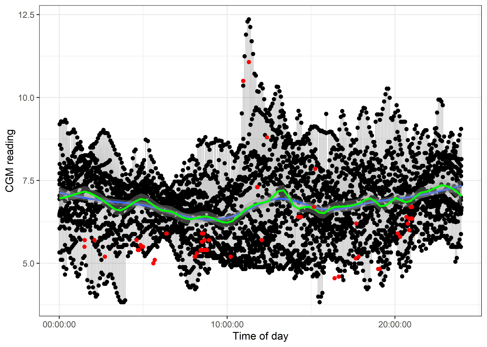
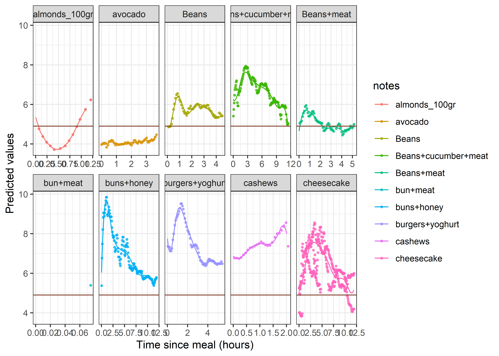
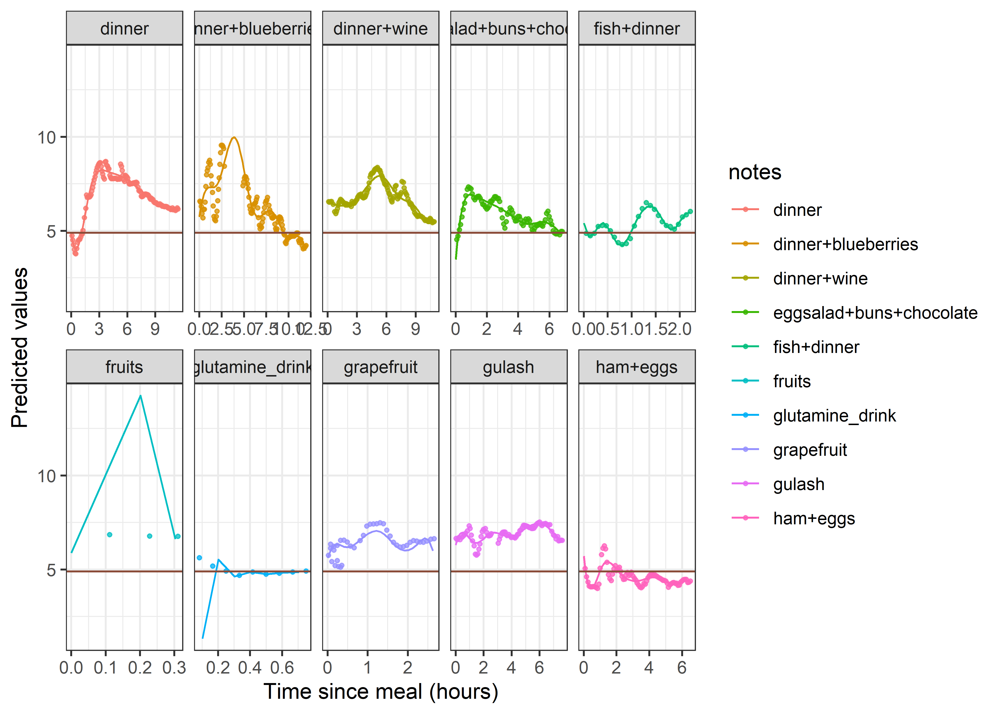

source( here::here( "Inst", "article", "functions", "load_stuff.r"))
source( here::here( "Inst", "article", "functions", "wrangling.r"))
# source_all_files(here::here("inst","example_quarto","backend")) # Run slow stuff;
##recommend running separately
load_all_Rdata(directory=here::here("inst","example_quarto","backend")) # Load slow suff's outputCGM measurements of a health 30-something male
Introduction
I recently purchased two continuous glucose monitors as I am fascinated with its technology and health, nutrition & sports science in general.
After having a blast watching the readings go up and down and going through the readings as any self-respecting biostatistician would, I would like to share my results.
I have applied the 2 sensors about half a year apart and was monitoring them through xDrip+. The first was a Libre2 and the second was a Dexcom G6. The former needed calibrating with this setup, and I was learning on-the-fly which meant that my readings were all over the place.
All of the glucose values are in mmol/l.
Data extraction
xDrip+ outputs its database in a .sqlite format which is readable with the right package. My notes had to be hand-recoded for this analysis as half of it wasn’t in English and was riddled with typos. Still, some entries just read something like ‘lunch’.
Results
Calibration
I have calibrated my sensors via fingertip measurements in a haphazard way. xDrip+ automatically advances the measurements by 10 minutes, due to the subcutaneous readings’ lag (I’ve verified this, not shown here). I applied the calibration for the first sensor only, as the second one is supposedly calibrated by default and seemed pretty stable (after a considerable warm-up period).

Final calibration values shown below.
The calibration points along with their place in a given day are also shown (because I could).

Raw results
I’ve plotted my readings below. There is an apparent difference between the sensors but this also could be a calibration issue.
Plotting the results onto a 24 hour window gives the below picture. This of course is the result of my eating habits which are shall we say hard to quantify.

Multivariate approach
Tried to visualize the readings in the following way:
- meals were logged, so the time since last meal could be determined at each timepoint
- elevation in blood glucose were listed 45; 60; 90 minutes after meals, and
- k-means clustering was attempted in order to identify potential interesting patterns
The patterns alas were proven to be moderately interesting, with some types of meals influencing blood glucose minimally or massively but overall, in a uniform pattern.

Recurring oscillations
Anticipating the problem of high autocorrelation, and taking into consideration the pulsatile nature of hormone release in general, I investigated the results with a periodogram (searching for oscillations as a function of frequency). Though noisy, a pattern of oscillations every 20 minutes may be interesting. However, inserting an oscillating sine/cosine wave at this frequency did not improve the models (see later).

Modelling
A linear model was fitted with the following idea: - A circadian cycle was fitted with a small degree-of-freedom natural spline - Time since the last event was modelled with an additional spline on top of the circadian rhythm
The results are far from perfect. Actual problems:
- Only interaction terms were included in order to better interpret the effect of various foods (the blood sugar level always originating from the same value). This is particularly bad because there may be lingering effects from the previous food effects.
- There are meals with few observations (because I ate some more after a short while). It is not appropriate to fit a large degree-of-freedom spline for them and ‘sparser’ splines should be specified (by hand in the model matrix).
- A better way of looking at things would be to model both time since last meal and any documented activities in addition to one another (at this current setup, an activity ‘stops’ the modelling of the food effect).
While there are some definite issues with this setup, and the distribution of the residuals are not too good, but the resulting model explains ~75% of the total variability and produces plausable graphs for the food/circadian effects.
| Df | Sum Sq | Mean Sq | F value | Pr(>F) | |
|---|---|---|---|---|---|
| notes | 58 | 2816.87468 | 48.5668048 | 169.044617 | 0.0e+00 |
| bs(note_time_scaled, Boundary.knots = c(0, 1), knots = seq(0, 1, length.out = 7)[2:6]) | 8 | 442.85047 | 55.3563089 | 192.676584 | 0.0e+00 |
| notes_activity | 11 | 267.94620 | 24.3587455 | 84.784553 | 0.0e+00 |
| bs(note_time_scaled_activity, Boundary.knots = c(0, 1), knots = seq(0, 1, length.out = 7)[2:6]) | 8 | 10.85934 | 1.3574177 | 4.724712 | 8.7e-06 |
| ns(tod, df = 4) | 4 | 20.42741 | 5.1068518 | 17.775223 | 0.0e+00 |
| notes:bs(note_time_scaled, Boundary.knots = c(0, 1), knots = seq(0, 1, length.out = 7)[2:6]) | 415 | 1264.88253 | 3.0479097 | 10.608743 | 0.0e+00 |
| notes_activity:bs(note_time_scaled_activity, Boundary.knots = c(0, 1), knots = seq(0, 1, length.out = 7)[2:6]) | 74 | 63.97350 | 0.8645067 | 3.009056 | 0.0e+00 |
| Residuals | 4408 | 1266.42586 | 0.2873017 | NA | NA |
| Most extreme Cook's distances | |
|---|---|
| 315 | 143.3252828 |
| 2406 | 60.8155912 |
| 4890 | 24.1014644 |
| 4899 | 6.6767091 |
| 125 | 1.5069104 |
| 3481 | 0.6597419 |
| 2308 | 0.1770800 |
| 3882 | 0.1180221 |
| 3880 | 0.1096500 |
| 3153 | 0.0507546 |






| value 3 | |||
| Predictors | Estimates | CI | p |
| (Intercept) | 4.70 | -0.98 – 10.38 | 0.105 |
| N activity | 0.21 | -6.93 – 7.36 | 0.953 |
| N food | -1.11 | -3.70 – 1.49 | 0.404 |
| N none | -0.22 | -3.08 – 2.64 | 0.878 |
| Beans+cucumber+meat | 1.13 | -1.37 – 3.64 | 0.376 |
| Beans+meat | -0.47 | -3.21 – 2.26 | 0.735 |
| bun+meat | -0.63 | -8.04 – 6.78 | 0.868 |
| buns+honey | 0.90 | -1.60 – 3.40 | 0.481 |
| burgers+yoghurt | 2.61 | -0.00 – 5.23 | 0.050 |
| cashews | 1.73 | -1.56 – 5.03 | 0.302 |
| cheesecake | -0.05 | -2.50 – 2.40 | 0.966 |
| chineese food | -1.84 | -9.17 – 5.49 | 0.622 |
| chocolate until satisfaction |
1.38 | -5.96 – 8.71 | 0.713 |
| chocolate additional | 2.54 | -0.44 – 5.52 | 0.095 |
| citrus | -0.06 | -2.80 – 2.68 | 0.968 |
| citrus2 | 0.17 | -2.33 – 2.66 | 0.897 |
| coffee | -0.51 | -3.06 – 2.03 | 0.693 |
| coffee+oil | 0.37 | -2.22 – 2.97 | 0.777 |
| confectionary | -0.57 | -3.03 – 1.90 | 0.652 |
| confectionary ischler | 2.09 | -0.54 – 4.72 | 0.119 |
| confectionary poppy | 1.65 | -0.95 – 4.25 | 0.213 |
| dinner | -0.29 | -3.11 – 2.52 | 0.839 |
| dinner+blueberries | 0.61 | -1.91 – 3.12 | 0.636 |
| dinner+wine | 1.37 | -1.20 – 3.95 | 0.296 |
| eggsalad+buns+chocolate | -1.66 | -4.28 – 0.97 | 0.216 |
| fish+dinner | 0.28 | -3.00 – 3.55 | 0.868 |
| fruits | 0.74 | -6.59 – 8.07 | 0.843 |
| glutamine drink | 206.14 | -1487.47 – 1899.74 | 0.811 |
| grapefruit | 0.49 | -2.93 – 3.91 | 0.780 |
| gulash | 1.17 | -1.39 – 3.73 | 0.370 |
| ham+eggs | 0.58 | -2.09 – 3.25 | 0.671 |
| hamburger+blueberries | -2.14 | -4.85 – 0.58 | 0.123 |
| linseed+oil | 1.40 | -1.13 – 3.92 | 0.277 |
| lunch | 0.40 | -2.10 – 2.90 | 0.752 |
| mango | 3.67 | 1.13 – 6.22 | 0.005 |
| mango small | -0.09 | -2.84 – 2.66 | 0.950 |
| McDonalds | 0.63 | -1.98 – 3.24 | 0.636 |
| McDonalds doubleMcroyal+Mcfreeze |
-1.87 | -4.65 – 0.91 | 0.187 |
| nibble | 1.42 | -1.08 – 3.92 | 0.265 |
| none | -1.08 | -8.34 – 6.18 | 0.771 |
| OGTT | -1.40 | -4.07 – 1.27 | 0.303 |
| paeanuts 50gr | -0.71 | -8.04 – 6.63 | 0.850 |
| pasta | -0.67 | -3.45 – 2.11 | 0.638 |
| peanut butter homemade | 0.53 | -2.03 – 3.10 | 0.684 |
| pinapple+blueberries | -1.26 | -8.60 – 6.07 | 0.736 |
| pomelo | -7.05 | -79.90 – 65.79 | 0.850 |
| pomelo + chocolate | 2.06 | -0.47 – 4.59 | 0.110 |
| potato | -0.13 | -2.89 – 2.63 | 0.927 |
| potato puree | -0.02 | -7.35 – 7.31 | 0.996 |
| salad | 0.21 | -2.34 – 2.76 | 0.872 |
| salad2 | 0.09 | -4.07 – 4.25 | 0.966 |
| salmon+potato+buns | -0.43 | -3.38 – 2.52 | 0.774 |
| sausages+cheescake+mango | -1.20 | -3.76 – 1.37 | 0.361 |
| sausages+chocolate | -0.17 | -2.78 – 2.44 | 0.899 |
| sausages+lunch | -0.49 | -3.37 – 2.40 | 0.741 |
| shake peanut 500gr kfc | 1.80 | -0.72 – 4.31 | 0.161 |
| squash+stew | -0.42 | -3.10 – 2.26 | 0.759 |
| stew | 1.09 | -1.42 – 3.60 | 0.395 |
| stew curry | 1.17 | -1.37 – 3.71 | 0.366 |
| bs(note time scaled [ degree] × 6])1 |
-0.68 | -10.29 – 8.94 | 0.890 |
| bs(note time scaled [ degree] × 6])2 |
-1.15 | -6.64 – 4.34 | 0.681 |
| bs(note time scaled [ degree] × 6])3 |
-1.72 | -9.23 – 5.79 | 0.654 |
| bs(note time scaled [ degree] × 6])4 |
-1.58 | -8.12 – 4.96 | 0.636 |
| bs(note time scaled [ degree] × 6])5 |
-1.02 | -8.09 – 6.06 | 0.778 |
| bs(note time scaled [ degree] × 6])6 |
0.13 | -6.72 – 6.98 | 0.971 |
| bs(note time scaled [ degree] × 6])7 |
0.56 | -6.56 – 7.69 | 0.876 |
| bs(note time scaled [ degree] × 6])8 |
0.89 | -5.96 – 7.73 | 0.800 |
| activityend of meeting | 0.61 | -4.70 – 5.93 | 0.821 |
| activitynone | 0.43 | -4.71 – 5.58 | 0.869 |
| activitypushup | 1.12 | -4.85 – 7.10 | 0.712 |
| activityrunning end | -3.12 | -8.43 – 2.18 | 0.248 |
| activitysauna | -0.42 | -5.83 – 4.99 | 0.879 |
| activitysauna begin | 1.20 | -4.68 – 7.09 | 0.688 |
| activitywalking | -0.62 | -5.93 – 4.68 | 0.818 |
| activityWorkout | 0.06 | -1.36 – 1.48 | 0.937 |
| activityWorkout begin | -0.15 | -6.87 – 6.57 | 0.965 |
| activityWorkout ellipt train end |
0.72 | -17.55 – 18.99 | 0.938 |
| activityWorkout sprint end |
0.79 | -4.91 – 6.49 | 0.786 |
| bs(note time scaled activity [ degree] × 6])1 |
1.70 | -7.28 – 10.67 | 0.711 |
| bs(note time scaled activity [ degree] × 6])2 |
0.52 | -3.31 – 4.35 | 0.791 |
| bs(note time scaled activity [ degree] × 6])3 |
0.94 | -5.19 – 7.07 | 0.763 |
| bs(note time scaled activity [ degree] × 6])4 |
-0.87 | -5.79 – 4.05 | 0.729 |
| bs(note time scaled activity [ degree] × 6])5 |
0.57 | -5.06 – 6.20 | 0.842 |
| bs(note time scaled activity [ degree] × 6])6 |
-2.21 | -7.46 – 3.04 | 0.408 |
| bs(note time scaled activity [ degree] × 6])7 |
0.22 | -5.15 – 5.58 | 0.937 |
| bs(note time scaled activity [ degree] × 6])8 |
0.19 | -5.00 – 5.39 | 0.941 |
| ns(tod, df = 4)1 | 0.89 | 0.70 – 1.08 | <0.001 |
| ns(tod, df = 4)2 | -0.05 | -0.33 – 0.23 | 0.716 |
| ns(tod, df = 4)3 | 1.70 | 1.29 – 2.10 | <0.001 |
| ns(tod, df = 4)4 | -0.47 | -0.70 – -0.23 | <0.001 |
| avocado × bs(note time scaled [ degree] × 6])1 |
0.53 | -9.26 – 10.33 | 0.915 |
| Beans × bs(note time scaled [ degree] × 6])1 |
0.18 | -9.78 – 10.15 | 0.971 |
| Beans+cucumber+meat × bs(note time scaled [ degree] × 6])1 |
0.32 | -9.38 – 10.01 | 0.949 |
| Beans+meat × bs(note time scaled [ degree] × 6])1 |
1.77 | -8.10 – 11.65 | 0.725 |
| buns+honey × bs(note time scaled [ degree] × 6])1 |
6.05 | -3.63 – 15.74 | 0.221 |
| burgers+yoghurt × bs(note time scaled [ degree] × 6])1 |
-1.10 | -10.89 – 8.70 | 0.826 |
| cashews × bs(note time scaled [ degree] × 6])1 |
0.44 | -9.93 – 10.82 | 0.933 |
| cheesecake × bs(note time scaled [ degree] × 6])1 |
0.91 | -8.73 – 10.56 | 0.853 |
| chocolate until satisfaction × bs(note time scaled [ degree] × 6])1 |
0.51 | -6.15 – 7.17 | 0.881 |
| chocolate additional × bs(note time scaled [ degree] × 6])1 |
0.41 | -9.66 – 10.47 | 0.937 |
| citrus × bs(note time scaled [ degree] × 6])1 |
0.37 | -9.91 – 10.65 | 0.944 |
| citrus2 × bs(note time scaled [ degree] × 6])1 |
1.70 | -7.98 – 11.39 | 0.730 |
| coffee × bs(note time scaled [ degree] × 6])1 |
-1.16 | -10.93 – 8.61 | 0.816 |
| coffee+oil × bs(note time scaled [ degree] × 6])1 |
0.24 | -9.53 – 10.02 | 0.961 |
| confectionary × bs(note time scaled [ degree] × 6])1 |
2.70 | -6.96 – 12.36 | 0.584 |
| confectionary ischler × bs(note time scaled [ degree] × 6])1 |
0.17 | -9.68 – 10.02 | 0.973 |
| confectionary poppy × bs(note time scaled [ degree] × 6])1 |
-1.22 | -10.98 – 8.54 | 0.806 |
| dinner × bs(note time scaled [ degree] × 6])1 |
-1.51 | -11.58 – 8.56 | 0.769 |
| dinner+blueberries × bs(note time scaled [ degree] × 6])1 |
3.04 | -6.67 – 12.74 | 0.539 |
| dinner+wine × bs(note time scaled [ degree] × 6])1 |
0.61 | -9.13 – 10.34 | 0.903 |
| eggsalad+buns+chocolate × bs(note time scaled [ degree] × 6])1 |
4.36 | -5.43 – 14.15 | 0.383 |
| fish+dinner × bs(note time scaled [ degree] × 6])1 |
-0.94 | -11.24 – 9.36 | 0.858 |
| glutamine drink × bs(note time scaled [ degree] × 6])1 |
-221.83 | -2056.35 – 1612.70 | 0.813 |
| grapefruit × bs(note time scaled [ degree] × 6])1 |
1.78 | -8.60 – 12.16 | 0.737 |
| gulash × bs(note time scaled [ degree] × 6])1 |
1.96 | -7.79 – 11.70 | 0.694 |
| ham+eggs × bs(note time scaled [ degree] × 6])1 |
-2.40 | -12.22 – 7.42 | 0.632 |
| hamburger+blueberries × bs(note time scaled [ degree] × 6])1 |
5.70 | -4.15 – 15.56 | 0.257 |
| linseed+oil × bs(note time scaled [ degree] × 6])1 |
0.09 | -9.62 – 9.79 | 0.986 |
| lunch × bs(note time scaled [ degree] × 6])1 |
1.84 | -7.85 – 11.52 | 0.710 |
| mango × bs(note time scaled [ degree] × 6])1 |
-1.37 | -11.09 – 8.35 | 0.782 |
| mango small × bs(note time scaled [ degree] × 6])1 |
0.76 | -9.77 – 11.29 | 0.887 |
| McDonalds × bs(note time scaled [ degree] × 6])1 |
-0.40 | -10.20 – 9.41 | 0.936 |
| McDonalds doubleMcroyal+Mcfreeze × bs(note time scaled [ degree] × 6])1 |
3.29 | -6.64 – 13.21 | 0.516 |
| nibble × bs(note time scaled [ degree] × 6])1 |
2.02 | -7.67 – 11.71 | 0.683 |
| OGTT × bs(note time scaled [ degree] × 6])1 |
4.46 | -5.39 – 14.30 | 0.375 |
| pasta × bs(note time scaled [ degree] × 6])1 |
1.71 | -8.20 – 11.62 | 0.736 |
| peanut butter homemade × bs(note time scaled [ degree] × 6])1 |
-0.69 | -10.42 – 9.04 | 0.889 |
| pomelo × bs(note time scaled [ degree] × 6])1 |
7.37 | -71.00 – 85.75 | 0.854 |
| pomelo + chocolate × bs(note time scaled [ degree] × 6])1 |
-0.50 | -10.20 – 9.21 | 0.920 |
| potato × bs(note time scaled [ degree] × 6])1 |
-0.00 | -9.96 – 9.95 | 1.000 |
| potato puree × bs(note time scaled [ degree] × 6])1 |
-513.77 | -1182.56 – 155.02 | 0.132 |
| salad × bs(note time scaled [ degree] × 6])1 |
1.33 | -8.40 – 11.06 | 0.789 |
| salad2 × bs(note time scaled [ degree] × 6])1 |
1.57 | -9.41 – 12.55 | 0.780 |
| salmon+potato+buns × bs(note time scaled [ degree] × 6])1 |
2.79 | -7.24 – 12.83 | 0.585 |
| sausages+cheescake+mango × bs(note time scaled [ degree] × 6])1 |
0.80 | -8.97 – 10.56 | 0.873 |
| sausages+chocolate × bs(note time scaled [ degree] × 6])1 |
1.47 | -8.33 – 11.27 | 0.769 |
| sausages+lunch × bs(note time scaled [ degree] × 6])1 |
-0.16 | -10.18 – 9.86 | 0.976 |
| shake peanut 500gr kfc × bs(note time scaled [ degree] × 6])1 |
0.22 | -9.47 – 9.92 | 0.964 |
| squash+stew × bs(note time scaled [ degree] × 6])1 |
3.02 | -6.85 – 12.90 | 0.548 |
| stew × bs(note time scaled [ degree] × 6])1 |
0.90 | -8.79 – 10.60 | 0.855 |
| stew curry × bs(note time scaled [ degree] × 6])1 |
2.71 | -7.00 – 12.43 | 0.584 |
| yoghurt+other × bs(note time scaled [ degree] × 6])1 |
-0.29 | -10.69 – 10.10 | 0.956 |
| avocado × bs(note time scaled [ degree] × 6])2 |
1.38 | -4.27 – 7.03 | 0.632 |
| Beans × bs(note time scaled [ degree] × 6])2 |
3.78 | -1.91 – 9.46 | 0.193 |
| Beans+cucumber+meat × bs(note time scaled [ degree] × 6])2 |
3.07 | -2.48 – 8.62 | 0.278 |
| Beans+meat × bs(note time scaled [ degree] × 6])2 |
2.24 | -3.40 – 7.89 | 0.436 |
| buns+honey × bs(note time scaled [ degree] × 6])2 |
2.79 | -2.76 – 8.33 | 0.324 |
| burgers+yoghurt × bs(note time scaled [ degree] × 6])2 |
3.76 | -1.86 – 9.37 | 0.189 |
| cashews × bs(note time scaled [ degree] × 6])2 |
1.13 | -4.77 – 7.02 | 0.708 |
| cheesecake × bs(note time scaled [ degree] × 6])2 |
3.76 | -1.75 – 9.28 | 0.181 |
| chineese food × bs(note time scaled [ degree] × 6])2 |
152.58 | 28.15 – 277.01 | 0.016 |
| chocolate until satisfaction × bs(note time scaled [ degree] × 6])2 |
1.19 | -2.79 – 5.16 | 0.559 |
| chocolate additional × bs(note time scaled [ degree] × 6])2 |
0.82 | -4.95 – 6.59 | 0.780 |
| citrus × bs(note time scaled [ degree] × 6])2 |
1.48 | -4.67 – 7.63 | 0.637 |
| citrus2 × bs(note time scaled [ degree] × 6])2 |
2.33 | -3.22 – 7.88 | 0.410 |
| coffee × bs(note time scaled [ degree] × 6])2 |
3.26 | -2.48 – 8.99 | 0.266 |
| coffee+oil × bs(note time scaled [ degree] × 6])2 |
0.99 | -4.63 – 6.60 | 0.730 |
| confectionary × bs(note time scaled [ degree] × 6])2 |
3.27 | -2.26 – 8.80 | 0.246 |
| confectionary ischler × bs(note time scaled [ degree] × 6])2 |
0.54 | -5.23 – 6.32 | 0.854 |
| confectionary poppy × bs(note time scaled [ degree] × 6])2 |
3.34 | -2.25 – 8.93 | 0.242 |
| dinner × bs(note time scaled [ degree] × 6])2 |
4.84 | -0.89 – 10.58 | 0.098 |
| dinner+blueberries × bs(note time scaled [ degree] × 6])2 |
1.20 | -4.37 – 6.77 | 0.672 |
| dinner+wine × bs(note time scaled [ degree] × 6])2 |
0.79 | -4.79 – 6.36 | 0.782 |
| eggsalad+buns+chocolate × bs(note time scaled [ degree] × 6])2 |
4.55 | -1.05 – 10.15 | 0.111 |
| fish+dinner × bs(note time scaled [ degree] × 6])2 |
2.51 | -3.48 – 8.50 | 0.411 |
| fruits × bs(note time scaled [ degree] × 6])2 |
-80.46 | -211.14 – 50.23 | 0.228 |
| glutamine drink × bs(note time scaled [ degree] × 6])2 |
-201.91 | -1872.58 – 1468.75 | 0.813 |
| grapefruit × bs(note time scaled [ degree] × 6])2 |
1.32 | -4.58 – 7.22 | 0.661 |
| gulash × bs(note time scaled [ degree] × 6])2 |
0.55 | -5.04 – 6.15 | 0.846 |
| ham+eggs × bs(note time scaled [ degree] × 6])2 |
1.75 | -3.87 – 7.36 | 0.542 |
| hamburger+blueberries × bs(note time scaled [ degree] × 6])2 |
4.38 | -1.26 – 10.02 | 0.128 |
| linseed+oil × bs(note time scaled [ degree] × 6])2 |
1.44 | -4.11 – 7.00 | 0.610 |
| lunch × bs(note time scaled [ degree] × 6])2 |
2.51 | -3.03 – 8.05 | 0.375 |
| mango × bs(note time scaled [ degree] × 6])2 |
-0.58 | -6.14 – 4.98 | 0.838 |
| mango small × bs(note time scaled [ degree] × 6])2 |
1.59 | -4.71 – 7.89 | 0.621 |
| McDonalds × bs(note time scaled [ degree] × 6])2 |
3.05 | -2.60 – 8.70 | 0.290 |
| McDonalds doubleMcroyal+Mcfreeze × bs(note time scaled [ degree] × 6])2 |
3.66 | -2.10 – 9.42 | 0.213 |
| nibble × bs(note time scaled [ degree] × 6])2 |
0.05 | -5.51 – 5.60 | 0.987 |
| OGTT × bs(note time scaled [ degree] × 6])2 |
9.40 | 3.73 – 15.07 | 0.001 |
| paeanuts 50gr × bs(note time scaled [ degree] × 6])2 |
18.42 | 0.96 – 35.88 | 0.039 |
| pasta × bs(note time scaled [ degree] × 6])2 |
4.26 | -1.52 – 10.05 | 0.148 |
| peanut butter homemade × bs(note time scaled [ degree] × 6])2 |
1.53 | -4.03 – 7.09 | 0.590 |
| pomelo × bs(note time scaled [ degree] × 6])2 |
6.99 | -64.76 – 78.74 | 0.849 |
| pomelo + chocolate × bs(note time scaled [ degree] × 6])2 |
-0.25 | -5.80 – 5.30 | 0.929 |
| potato × bs(note time scaled [ degree] × 6])2 |
2.01 | -3.73 – 7.75 | 0.493 |
| potato puree × bs(note time scaled [ degree] × 6])2 |
2370.60 | -713.07 – 5454.26 | 0.132 |
| salad × bs(note time scaled [ degree] × 6])2 |
0.65 | -4.93 – 6.22 | 0.820 |
| salad2 × bs(note time scaled [ degree] × 6])2 |
1.06 | -5.16 – 7.27 | 0.739 |
| salmon+potato+buns × bs(note time scaled [ degree] × 6])2 |
4.60 | -1.13 – 10.32 | 0.115 |
| sausages+cheescake+mango × bs(note time scaled [ degree] × 6])2 |
6.32 | 0.70 – 11.94 | 0.028 |
| sausages+chocolate × bs(note time scaled [ degree] × 6])2 |
1.42 | -4.21 – 7.06 | 0.621 |
| sausages+lunch × bs(note time scaled [ degree] × 6])2 |
1.81 | -3.93 – 7.54 | 0.537 |
| shake peanut 500gr kfc × bs(note time scaled [ degree] × 6])2 |
0.05 | -5.50 – 5.60 | 0.986 |
| squash+stew × bs(note time scaled [ degree] × 6])2 |
6.06 | -1.79 – 13.91 | 0.130 |
| stew × bs(note time scaled [ degree] × 6])2 |
0.43 | -5.12 – 5.98 | 0.879 |
| stew curry × bs(note time scaled [ degree] × 6])2 |
0.97 | -4.59 – 6.53 | 0.732 |
| yoghurt+other × bs(note time scaled [ degree] × 6])2 |
1.27 | -4.98 – 7.52 | 0.691 |
| avocado × bs(note time scaled [ degree] × 6])3 |
1.56 | -6.09 – 9.21 | 0.689 |
| Beans × bs(note time scaled [ degree] × 6])3 |
1.74 | -6.02 – 9.50 | 0.660 |
| Beans+cucumber+meat × bs(note time scaled [ degree] × 6])3 |
2.62 | -4.96 – 10.19 | 0.498 |
| Beans+meat × bs(note time scaled [ degree] × 6])3 |
2.27 | -5.43 – 9.97 | 0.564 |
| buns+honey × bs(note time scaled [ degree] × 6])3 |
2.85 | -4.72 – 10.42 | 0.461 |
| burgers+yoghurt × bs(note time scaled [ degree] × 6])3 |
2.45 | -5.19 – 10.09 | 0.530 |
| cashews × bs(note time scaled [ degree] × 6])3 |
2.21 | -5.85 – 10.28 | 0.590 |
| cheesecake × bs(note time scaled [ degree] × 6])3 |
4.21 | -3.33 – 11.75 | 0.274 |
| chocolate until satisfaction × bs(note time scaled [ degree] × 6])3 |
1.44 | -1.79 – 4.68 | 0.383 |
| chocolate additional × bs(note time scaled [ degree] × 6])3 |
1.81 | -6.05 – 9.66 | 0.652 |
| citrus × bs(note time scaled [ degree] × 6])3 |
3.08 | -4.89 – 11.04 | 0.449 |
| citrus2 × bs(note time scaled [ degree] × 6])3 |
2.69 | -4.87 – 10.26 | 0.485 |
| coffee × bs(note time scaled [ degree] × 6])3 |
2.91 | -4.85 – 10.66 | 0.462 |
| coffee+oil × bs(note time scaled [ degree] × 6])3 |
2.51 | -5.14 – 10.15 | 0.521 |
| confectionary × bs(note time scaled [ degree] × 6])3 |
4.16 | -3.39 – 11.70 | 0.280 |
| confectionary ischler × bs(note time scaled [ degree] × 6])3 |
2.17 | -5.54 – 9.88 | 0.581 |
| confectionary poppy × bs(note time scaled [ degree] × 6])3 |
0.83 | -6.79 – 8.46 | 0.830 |
| dinner × bs(note time scaled [ degree] × 6])3 |
5.02 | -2.67 – 12.72 | 0.201 |
| dinner+blueberries × bs(note time scaled [ degree] × 6])3 |
8.39 | 0.71 – 16.06 | 0.032 |
| dinner+wine × bs(note time scaled [ degree] × 6])3 |
2.17 | -5.43 – 9.78 | 0.575 |
| eggsalad+buns+chocolate × bs(note time scaled [ degree] × 6])3 |
4.70 | -2.94 – 12.34 | 0.228 |
| fish+dinner × bs(note time scaled [ degree] × 6])3 |
-0.53 | -8.59 – 7.53 | 0.898 |
| glutamine drink × bs(note time scaled [ degree] × 6])3 |
-205.51 | -1905.01 – 1493.99 | 0.813 |
| grapefruit × bs(note time scaled [ degree] × 6])3 |
2.88 | -5.18 – 10.94 | 0.483 |
| gulash × bs(note time scaled [ degree] × 6])3 |
2.77 | -4.85 – 10.39 | 0.476 |
| ham+eggs × bs(note time scaled [ degree] × 6])3 |
0.64 | -7.03 – 8.30 | 0.871 |
| hamburger+blueberries × bs(note time scaled [ degree] × 6])3 |
4.97 | -2.71 – 12.66 | 0.205 |
| linseed+oil × bs(note time scaled [ degree] × 6])3 |
0.93 | -6.65 – 8.52 | 0.809 |
| lunch × bs(note time scaled [ degree] × 6])3 |
3.18 | -4.38 – 10.75 | 0.410 |
| mango × bs(note time scaled [ degree] × 6])3 |
0.44 | -7.15 – 8.04 | 0.909 |
| mango small × bs(note time scaled [ degree] × 6])3 |
1.88 | -6.17 – 9.93 | 0.647 |
| McDonalds × bs(note time scaled [ degree] × 6])3 |
2.07 | -5.59 – 9.73 | 0.596 |
| McDonalds doubleMcroyal+Mcfreeze × bs(note time scaled [ degree] × 6])3 |
4.49 | -3.22 – 12.19 | 0.254 |
| nibble × bs(note time scaled [ degree] × 6])3 |
2.20 | -5.37 – 9.77 | 0.569 |
| OGTT × bs(note time scaled [ degree] × 6])3 |
5.89 | -1.85 – 13.62 | 0.136 |
| pasta × bs(note time scaled [ degree] × 6])3 |
3.95 | -3.78 – 11.68 | 0.316 |
| peanut butter homemade × bs(note time scaled [ degree] × 6])3 |
0.76 | -6.84 – 8.36 | 0.845 |
| pomelo × bs(note time scaled [ degree] × 6])3 |
8.20 | -65.63 – 82.02 | 0.828 |
| pomelo + chocolate × bs(note time scaled [ degree] × 6])3 |
1.17 | -6.42 – 8.75 | 0.763 |
| potato × bs(note time scaled [ degree] × 6])3 |
3.02 | -4.74 – 10.78 | 0.446 |
| potato puree × bs(note time scaled [ degree] × 6])3 |
-1311.65 | -3020.91 – 397.61 | 0.133 |
| salad × bs(note time scaled [ degree] × 6])3 |
2.09 | -5.52 – 9.69 | 0.591 |
| salad2 × bs(note time scaled [ degree] × 6])3 |
4.68 | -3.83 – 13.19 | 0.281 |
| salmon+potato+buns × bs(note time scaled [ degree] × 6])3 |
4.80 | -3.02 – 12.61 | 0.229 |
| sausages+cheescake+mango × bs(note time scaled [ degree] × 6])3 |
4.76 | -2.87 – 12.39 | 0.221 |
| sausages+chocolate × bs(note time scaled [ degree] × 6])3 |
0.22 | -7.43 – 7.87 | 0.955 |
| sausages+lunch × bs(note time scaled [ degree] × 6])3 |
3.45 | -4.35 – 11.25 | 0.386 |
| shake peanut 500gr kfc × bs(note time scaled [ degree] × 6])3 |
3.03 | -4.54 – 10.61 | 0.432 |
| squash+stew × bs(note time scaled [ degree] × 6])3 |
4.79 | -3.01 – 12.59 | 0.229 |
| stew × bs(note time scaled [ degree] × 6])3 |
2.65 | -4.92 – 10.22 | 0.493 |
| stew curry × bs(note time scaled [ degree] × 6])3 |
5.50 | -2.09 – 13.09 | 0.155 |
| yoghurt+other × bs(note time scaled [ degree] × 6])3 |
3.99 | -4.78 – 12.76 | 0.372 |
| avocado × bs(note time scaled [ degree] × 6])4 |
1.65 | -5.01 – 8.31 | 0.627 |
| Beans × bs(note time scaled [ degree] × 6])4 |
2.90 | -3.84 – 9.64 | 0.399 |
| Beans+cucumber+meat × bs(note time scaled [ degree] × 6])4 |
2.21 | -4.38 – 8.80 | 0.511 |
| Beans+meat × bs(note time scaled [ degree] × 6])4 |
1.55 | -5.14 – 8.25 | 0.650 |
| buns+honey × bs(note time scaled [ degree] × 6])4 |
2.57 | -4.02 – 9.16 | 0.445 |
| burgers+yoghurt × bs(note time scaled [ degree] × 6])4 |
1.08 | -5.57 – 7.73 | 0.750 |
| cashews × bs(note time scaled [ degree] × 6])4 |
2.29 | -4.68 – 9.26 | 0.519 |
| cheesecake × bs(note time scaled [ degree] × 6])4 |
3.35 | -3.21 – 9.91 | 0.317 |
| chocolate until satisfaction × bs(note time scaled [ degree] × 6])4 |
1.48 | -1.54 – 4.50 | 0.337 |
| chocolate additional × bs(note time scaled [ degree] × 6])4 |
0.91 | -5.90 – 7.73 | 0.793 |
| citrus × bs(note time scaled [ degree] × 6])4 |
3.90 | -3.02 – 10.81 | 0.269 |
| citrus2 × bs(note time scaled [ degree] × 6])4 |
1.83 | -4.76 – 8.41 | 0.587 |
| coffee × bs(note time scaled [ degree] × 6])4 |
3.77 | -2.96 – 10.50 | 0.272 |
| coffee+oil × bs(note time scaled [ degree] × 6])4 |
2.49 | -4.20 – 9.18 | 0.466 |
| confectionary × bs(note time scaled [ degree] × 6])4 |
3.99 | -2.60 – 10.58 | 0.235 |
| confectionary ischler × bs(note time scaled [ degree] × 6])4 |
1.96 | -4.77 – 8.69 | 0.568 |
| confectionary poppy × bs(note time scaled [ degree] × 6])4 |
1.96 | -4.67 – 8.60 | 0.562 |
| dinner × bs(note time scaled [ degree] × 6])4 |
4.64 | -2.08 – 11.36 | 0.176 |
| dinner+blueberries × bs(note time scaled [ degree] × 6])4 |
0.16 | -6.45 – 6.76 | 0.962 |
| dinner+wine × bs(note time scaled [ degree] × 6])4 |
3.59 | -3.03 – 10.20 | 0.288 |
| eggsalad+buns+chocolate × bs(note time scaled [ degree] × 6])4 |
4.05 | -2.59 – 10.69 | 0.232 |
| fish+dinner × bs(note time scaled [ degree] × 6])4 |
2.09 | -4.94 – 9.11 | 0.561 |
| fruits × bs(note time scaled [ degree] × 6])4 |
42.03 | -14.00 – 98.07 | 0.141 |
| glutamine drink × bs(note time scaled [ degree] × 6])4 |
-204.61 | -1895.65 – 1486.44 | 0.813 |
| grapefruit × bs(note time scaled [ degree] × 6])4 |
3.30 | -3.69 – 10.28 | 0.355 |
| gulash × bs(note time scaled [ degree] × 6])4 |
1.74 | -4.88 – 8.36 | 0.607 |
| ham+eggs × bs(note time scaled [ degree] × 6])4 |
0.09 | -6.57 – 6.75 | 0.979 |
| hamburger+blueberries × bs(note time scaled [ degree] × 6])4 |
3.88 | -2.80 – 10.57 | 0.255 |
| linseed+oil × bs(note time scaled [ degree] × 6])4 |
4.39 | -2.21 – 10.99 | 0.192 |
| lunch × bs(note time scaled [ degree] × 6])4 |
1.60 | -4.99 – 8.18 | 0.635 |
| mango × bs(note time scaled [ degree] × 6])4 |
0.29 | -6.32 – 6.90 | 0.932 |
| mango small × bs(note time scaled [ degree] × 6])4 |
1.67 | -5.29 – 8.62 | 0.639 |
| McDonalds × bs(note time scaled [ degree] × 6])4 |
1.14 | -5.53 – 7.81 | 0.737 |
| McDonalds doubleMcroyal+Mcfreeze × bs(note time scaled [ degree] × 6])4 |
4.02 | -2.70 – 10.74 | 0.240 |
| nibble × bs(note time scaled [ degree] × 6])4 |
1.15 | -5.45 – 7.75 | 0.733 |
| OGTT × bs(note time scaled [ degree] × 6])4 |
5.65 | -1.17 – 12.47 | 0.105 |
| pasta × bs(note time scaled [ degree] × 6])4 |
4.81 | -2.04 – 11.65 | 0.169 |
| peanut butter homemade × bs(note time scaled [ degree] × 6])4 |
2.18 | -4.43 – 8.79 | 0.518 |
| pomelo × bs(note time scaled [ degree] × 6])4 |
8.11 | -64.64 – 80.85 | 0.827 |
| pomelo + chocolate × bs(note time scaled [ degree] × 6])4 |
-0.30 | -6.89 – 6.30 | 0.930 |
| potato × bs(note time scaled [ degree] × 6])4 |
0.74 | -6.01 – 7.49 | 0.830 |
| potato puree × bs(note time scaled [ degree] × 6])4 |
224.78 | -64.49 – 514.05 | 0.128 |
| salad × bs(note time scaled [ degree] × 6])4 |
0.86 | -5.76 – 7.47 | 0.799 |
| salad2 × bs(note time scaled [ degree] × 6])4 |
5.81 | -1.56 – 13.17 | 0.122 |
| salmon+potato+buns × bs(note time scaled [ degree] × 6])4 |
5.02 | -1.76 – 11.81 | 0.147 |
| sausages+cheescake+mango × bs(note time scaled [ degree] × 6])4 |
5.47 | -1.17 – 12.11 | 0.106 |
| sausages+chocolate × bs(note time scaled [ degree] × 6])4 |
2.71 | -3.95 – 9.36 | 0.425 |
| sausages+lunch × bs(note time scaled [ degree] × 6])4 |
3.60 | -3.17 – 10.37 | 0.298 |
| shake peanut 500gr kfc × bs(note time scaled [ degree] × 6])4 |
-0.29 | -6.89 – 6.30 | 0.930 |
| squash+stew × bs(note time scaled [ degree] × 6])4 |
5.67 | -1.04 – 12.37 | 0.098 |
| stew × bs(note time scaled [ degree] × 6])4 |
1.42 | -5.18 – 8.01 | 0.673 |
| stew curry × bs(note time scaled [ degree] × 6])4 |
1.84 | -4.77 – 8.44 | 0.586 |
| yoghurt+other × bs(note time scaled [ degree] × 6])4 |
3.16 | -4.00 – 10.33 | 0.387 |
| avocado × bs(note time scaled [ degree] × 6])5 |
1.04 | -6.17 – 8.25 | 0.778 |
| Beans × bs(note time scaled [ degree] × 6])5 |
1.98 | -5.33 – 9.29 | 0.596 |
| Beans+cucumber+meat × bs(note time scaled [ degree] × 6])5 |
1.44 | -5.69 – 8.58 | 0.692 |
| Beans+meat × bs(note time scaled [ degree] × 6])5 |
1.39 | -5.88 – 8.66 | 0.708 |
| buns+honey × bs(note time scaled [ degree] × 6])5 |
0.68 | -6.45 – 7.81 | 0.852 |
| burgers+yoghurt × bs(note time scaled [ degree] × 6])5 |
-0.45 | -7.65 – 6.75 | 0.902 |
| cashews × bs(note time scaled [ degree] × 6])5 |
1.50 | -6.08 – 9.08 | 0.698 |
| cheesecake × bs(note time scaled [ degree] × 6])5 |
1.40 | -5.70 – 8.50 | 0.699 |
| chocolate until satisfaction × bs(note time scaled [ degree] × 6])5 |
1.53 | -1.72 – 4.79 | 0.356 |
| chocolate additional × bs(note time scaled [ degree] × 6])5 |
1.21 | -6.18 – 8.61 | 0.748 |
| citrus × bs(note time scaled [ degree] × 6])5 |
3.08 | -4.43 – 10.59 | 0.422 |
| citrus2 × bs(note time scaled [ degree] × 6])5 |
1.79 | -5.34 – 8.92 | 0.623 |
| coffee × bs(note time scaled [ degree] × 6])5 |
1.25 | -5.93 – 8.44 | 0.733 |
| coffee+oil × bs(note time scaled [ degree] × 6])5 |
3.61 | -4.14 – 11.36 | 0.361 |
| confectionary × bs(note time scaled [ degree] × 6])5 |
-1.37 | -8.50 – 5.76 | 0.706 |
| confectionary ischler × bs(note time scaled [ degree] × 6])5 |
0.27 | -7.01 – 7.56 | 0.941 |
| confectionary poppy × bs(note time scaled [ degree] × 6])5 |
-0.29 | -7.47 – 6.89 | 0.936 |
| dinner × bs(note time scaled [ degree] × 6])5 |
3.24 | -4.01 – 10.49 | 0.381 |
| dinner+blueberries × bs(note time scaled [ degree] × 6])5 |
2.40 | -4.75 – 9.54 | 0.511 |
| dinner+wine × bs(note time scaled [ degree] × 6])5 |
0.98 | -6.18 – 8.14 | 0.788 |
| eggsalad+buns+chocolate × bs(note time scaled [ degree] × 6])5 |
2.70 | -4.49 – 9.90 | 0.461 |
| fish+dinner × bs(note time scaled [ degree] × 6])5 |
2.42 | -5.18 – 10.02 | 0.533 |
| glutamine drink × bs(note time scaled [ degree] × 6])5 |
-205.62 | -1900.77 – 1489.53 | 0.812 |
| grapefruit × bs(note time scaled [ degree] × 6])5 |
1.23 | -6.36 – 8.82 | 0.751 |
| gulash × bs(note time scaled [ degree] × 6])5 |
2.03 | -5.13 – 9.20 | 0.578 |
| ham+eggs × bs(note time scaled [ degree] × 6])5 |
0.13 | -7.09 – 7.34 | 0.973 |
| hamburger+blueberries × bs(note time scaled [ degree] × 6])5 |
4.68 | -2.56 – 11.92 | 0.205 |
| linseed+oil × bs(note time scaled [ degree] × 6])5 |
-0.17 | -7.30 – 6.96 | 0.963 |
| lunch × bs(note time scaled [ degree] × 6])5 |
2.48 | -4.65 – 9.60 | 0.496 |
| mango × bs(note time scaled [ degree] × 6])5 |
-2.12 | -9.28 – 5.03 | 0.560 |
| mango small × bs(note time scaled [ degree] × 6])5 |
0.95 | -6.63 – 8.53 | 0.806 |
| McDonalds × bs(note time scaled [ degree] × 6])5 |
1.09 | -6.13 – 8.30 | 0.768 |
| McDonalds doubleMcroyal+Mcfreeze × bs(note time scaled [ degree] × 6])5 |
3.13 | -4.13 – 10.39 | 0.398 |
| nibble × bs(note time scaled [ degree] × 6])5 |
1.81 | -5.32 – 8.95 | 0.618 |
| OGTT × bs(note time scaled [ degree] × 6])5 |
-0.24 | -8.55 – 8.07 | 0.955 |
| pasta × bs(note time scaled [ degree] × 6])5 |
3.47 | -3.87 – 10.81 | 0.354 |
| peanut butter homemade × bs(note time scaled [ degree] × 6])5 |
-0.77 | -7.93 – 6.39 | 0.833 |
| pomelo × bs(note time scaled [ degree] × 6])5 |
8.75 | -64.75 – 82.26 | 0.815 |
| pomelo + chocolate × bs(note time scaled [ degree] × 6])5 |
-1.35 | -8.49 – 5.80 | 0.712 |
| potato × bs(note time scaled [ degree] × 6])5 |
0.56 | -6.76 – 7.87 | 0.882 |
| salad × bs(note time scaled [ degree] × 6])5 |
2.57 | -4.59 – 9.73 | 0.482 |
| salad2 × bs(note time scaled [ degree] × 6])5 |
4.70 | -3.29 – 12.69 | 0.249 |
| salmon+potato+buns × bs(note time scaled [ degree] × 6])5 |
3.79 | -3.56 – 11.15 | 0.312 |
| sausages+cheescake+mango × bs(note time scaled [ degree] × 6])5 |
3.47 | -3.72 – 10.66 | 0.344 |
| sausages+chocolate × bs(note time scaled [ degree] × 6])5 |
-0.07 | -7.28 – 7.14 | 0.984 |
| sausages+lunch × bs(note time scaled [ degree] × 6])5 |
1.19 | -6.15 – 8.53 | 0.751 |
| shake peanut 500gr kfc × bs(note time scaled [ degree] × 6])5 |
-0.02 | -7.16 – 7.12 | 0.996 |
| squash+stew × bs(note time scaled [ degree] × 6])5 |
4.33 | -3.05 – 11.71 | 0.250 |
| stew × bs(note time scaled [ degree] × 6])5 |
3.02 | -4.12 – 10.16 | 0.407 |
| stew curry × bs(note time scaled [ degree] × 6])5 |
0.36 | -6.78 – 7.51 | 0.921 |
| yoghurt+other × bs(note time scaled [ degree] × 6])5 |
4.47 | -3.17 – 12.12 | 0.251 |
| avocado × bs(note time scaled [ degree] × 6])6 |
0.11 | -6.91 – 7.13 | 0.975 |
| Beans × bs(note time scaled [ degree] × 6])6 |
0.57 | -6.53 – 7.66 | 0.875 |
| Beans+cucumber+meat × bs(note time scaled [ degree] × 6])6 |
-0.95 | -7.87 – 5.97 | 0.789 |
| Beans+meat × bs(note time scaled [ degree] × 6])6 |
-0.34 | -7.39 – 6.70 | 0.924 |
| buns+honey × bs(note time scaled [ degree] × 6])6 |
-0.07 | -6.99 – 6.84 | 0.984 |
| burgers+yoghurt × bs(note time scaled [ degree] × 6])6 |
-1.03 | -8.02 – 5.97 | 0.773 |
| cashews × bs(note time scaled [ degree] × 6])6 |
0.89 | -6.50 – 8.29 | 0.812 |
| cheesecake × bs(note time scaled [ degree] × 6])6 |
0.86 | -6.02 – 7.74 | 0.807 |
| chocolate until satisfaction × bs(note time scaled [ degree] × 6])6 |
1.04 | -3.29 – 5.37 | 0.638 |
| chocolate additional × bs(note time scaled [ degree] × 6])6 |
-1.20 | -8.39 – 5.98 | 0.743 |
| citrus × bs(note time scaled [ degree] × 6])6 |
1.35 | -6.10 – 8.80 | 0.722 |
| citrus2 × bs(note time scaled [ degree] × 6])6 |
-1.26 | -8.18 – 5.65 | 0.720 |
| coffee × bs(note time scaled [ degree] × 6])6 |
-0.57 | -7.53 – 6.39 | 0.872 |
| coffee+oil × bs(note time scaled [ degree] × 6])6 |
-5.73 | -14.53 – 3.07 | 0.202 |
| confectionary × bs(note time scaled [ degree] × 6])6 |
9.08 | 1.94 – 16.22 | 0.013 |
| confectionary ischler × bs(note time scaled [ degree] × 6])6 |
-0.76 | -7.89 – 6.38 | 0.835 |
| confectionary poppy × bs(note time scaled [ degree] × 6])6 |
0.16 | -6.80 – 7.13 | 0.963 |
| dinner × bs(note time scaled [ degree] × 6])6 |
1.31 | -5.73 – 8.34 | 0.716 |
| dinner+blueberries × bs(note time scaled [ degree] × 6])6 |
-2.24 | -9.16 – 4.69 | 0.527 |
| dinner+wine × bs(note time scaled [ degree] × 6])6 |
0.05 | -6.90 – 7.00 | 0.988 |
| eggsalad+buns+chocolate × bs(note time scaled [ degree] × 6])6 |
2.06 | -4.92 – 9.05 | 0.562 |
| fish+dinner × bs(note time scaled [ degree] × 6])6 |
-1.46 | -8.83 – 5.91 | 0.698 |
| glutamine drink × bs(note time scaled [ degree] × 6])6 |
-206.47 | -1898.77 – 1485.82 | 0.811 |
| grapefruit × bs(note time scaled [ degree] × 6])6 |
0.32 | -7.04 – 7.68 | 0.932 |
| gulash × bs(note time scaled [ degree] × 6])6 |
1.22 | -5.74 – 8.17 | 0.731 |
| ham+eggs × bs(note time scaled [ degree] × 6])6 |
-1.87 | -8.87 – 5.13 | 0.601 |
| hamburger+blueberries × bs(note time scaled [ degree] × 6])6 |
2.45 | -4.58 – 9.47 | 0.495 |
| linseed+oil × bs(note time scaled [ degree] × 6])6 |
0.41 | -6.50 – 7.33 | 0.906 |
| lunch × bs(note time scaled [ degree] × 6])6 |
0.10 | -6.81 – 7.01 | 0.977 |
| mango × bs(note time scaled [ degree] × 6])6 |
-1.67 | -8.61 – 5.27 | 0.636 |
| mango small × bs(note time scaled [ degree] × 6])6 |
-0.25 | -7.83 – 7.34 | 0.949 |
| McDonalds × bs(note time scaled [ degree] × 6])6 |
-0.05 | -7.07 – 6.97 | 0.988 |
| McDonalds doubleMcroyal+Mcfreeze × bs(note time scaled [ degree] × 6])6 |
3.86 | -3.20 – 10.91 | 0.284 |
| nibble × bs(note time scaled [ degree] × 6])6 |
-1.46 | -8.38 – 5.47 | 0.680 |
| OGTT × bs(note time scaled [ degree] × 6])6 |
3.02 | -5.28 – 11.33 | 0.475 |
| pasta × bs(note time scaled [ degree] × 6])6 |
3.25 | -3.86 – 10.36 | 0.370 |
| peanut butter homemade × bs(note time scaled [ degree] × 6])6 |
-0.95 | -7.89 – 5.99 | 0.788 |
| pomelo × bs(note time scaled [ degree] × 6])6 |
7.57 | -65.26 – 80.39 | 0.839 |
| pomelo + chocolate × bs(note time scaled [ degree] × 6])6 |
-1.78 | -8.71 – 5.14 | 0.614 |
| potato × bs(note time scaled [ degree] × 6])6 |
-0.68 | -7.80 – 6.45 | 0.852 |
| salad × bs(note time scaled [ degree] × 6])6 |
-0.43 | -7.38 – 6.52 | 0.903 |
| salad2 × bs(note time scaled [ degree] × 6])6 |
2.55 | -5.19 – 10.30 | 0.519 |
| salmon+potato+buns × bs(note time scaled [ degree] × 6])6 |
1.12 | -6.01 – 8.26 | 0.757 |
| sausages+cheescake+mango × bs(note time scaled [ degree] × 6])6 |
2.87 | -4.12 – 9.86 | 0.420 |
| sausages+chocolate × bs(note time scaled [ degree] × 6])6 |
0.09 | -6.92 – 7.10 | 0.980 |
| sausages+lunch × bs(note time scaled [ degree] × 6])6 |
1.93 | -5.21 – 9.07 | 0.596 |
| shake peanut 500gr kfc × bs(note time scaled [ degree] × 6])6 |
-1.30 | -8.23 – 5.62 | 0.712 |
| squash+stew × bs(note time scaled [ degree] × 6])6 |
1.91 | -5.68 – 9.51 | 0.621 |
| stew × bs(note time scaled [ degree] × 6])6 |
1.04 | -5.88 – 7.97 | 0.767 |
| stew curry × bs(note time scaled [ degree] × 6])6 |
-0.19 | -7.12 – 6.74 | 0.957 |
| yoghurt+other × bs(note time scaled [ degree] × 6])6 |
2.30 | -5.17 – 9.77 | 0.546 |
| avocado × bs(note time scaled [ degree] × 6])7 |
-0.53 | -7.82 – 6.76 | 0.887 |
| Beans × bs(note time scaled [ degree] × 6])7 |
-0.26 | -7.64 – 7.12 | 0.945 |
| Beans+cucumber+meat × bs(note time scaled [ degree] × 6])7 |
-0.64 | -7.83 – 6.56 | 0.862 |
| Beans+meat × bs(note time scaled [ degree] × 6])7 |
-0.36 | -7.68 – 6.96 | 0.924 |
| buns+honey × bs(note time scaled [ degree] × 6])7 |
-1.24 | -8.43 – 5.95 | 0.735 |
| burgers+yoghurt × bs(note time scaled [ degree] × 6])7 |
-2.01 | -9.28 – 5.26 | 0.587 |
| cashews × bs(note time scaled [ degree] × 6])7 |
1.54 | -6.14 – 9.21 | 0.695 |
| cheesecake × bs(note time scaled [ degree] × 6])7 |
-0.96 | -8.12 – 6.19 | 0.792 |
| chocolate until satisfaction × bs(note time scaled [ degree] × 6])7 |
0.38 | -4.34 – 5.10 | 0.875 |
| chocolate additional × bs(note time scaled [ degree] × 6])7 |
-0.48 | -7.94 – 6.97 | 0.899 |
| citrus × bs(note time scaled [ degree] × 6])7 |
0.45 | -7.27 – 8.17 | 0.909 |
| citrus2 × bs(note time scaled [ degree] × 6])7 |
-1.17 | -8.36 – 6.02 | 0.750 |
| coffee × bs(note time scaled [ degree] × 6])7 |
0.06 | -7.20 – 7.33 | 0.986 |
| coffee+oil × bs(note time scaled [ degree] × 6])7 |
3.36 | -6.54 – 13.26 | 0.506 |
| confectionary × bs(note time scaled [ degree] × 6])7 |
-4.28 | -11.75 – 3.19 | 0.262 |
| confectionary ischler × bs(note time scaled [ degree] × 6])7 |
-2.19 | -9.61 – 5.23 | 0.563 |
| confectionary poppy × bs(note time scaled [ degree] × 6])7 |
-3.31 | -10.55 – 3.92 | 0.369 |
| dinner × bs(note time scaled [ degree] × 6])7 |
0.76 | -6.55 – 8.07 | 0.838 |
| dinner+blueberries × bs(note time scaled [ degree] × 6])7 |
-1.02 | -8.22 – 6.17 | 0.780 |
| dinner+wine × bs(note time scaled [ degree] × 6])7 |
-2.15 | -9.37 – 5.08 | 0.560 |
| eggsalad+buns+chocolate × bs(note time scaled [ degree] × 6])7 |
1.12 | -6.14 – 8.38 | 0.762 |
| fish+dinner × bs(note time scaled [ degree] × 6])7 |
0.20 | -7.46 – 7.87 | 0.959 |
| glutamine drink × bs(note time scaled [ degree] × 6])7 |
-206.99 | -1901.52 – 1487.53 | 0.811 |
| grapefruit × bs(note time scaled [ degree] × 6])7 |
0.97 | -6.69 – 8.63 | 0.804 |
| gulash × bs(note time scaled [ degree] × 6])7 |
-0.12 | -7.36 – 7.12 | 0.974 |
| ham+eggs × bs(note time scaled [ degree] × 6])7 |
-1.80 | -9.08 – 5.49 | 0.629 |
| hamburger+blueberries × bs(note time scaled [ degree] × 6])7 |
0.33 | -6.97 – 7.64 | 0.928 |
| linseed+oil × bs(note time scaled [ degree] × 6])7 |
-2.03 | -9.21 – 5.16 | 0.580 |
| lunch × bs(note time scaled [ degree] × 6])7 |
-0.29 | -7.47 – 6.89 | 0.938 |
| mango × bs(note time scaled [ degree] × 6])7 |
-4.56 | -11.78 – 2.66 | 0.216 |
| mango small × bs(note time scaled [ degree] × 6])7 |
-0.86 | -8.76 – 7.04 | 0.831 |
| McDonalds × bs(note time scaled [ degree] × 6])7 |
0.05 | -7.24 – 7.35 | 0.988 |
| McDonalds doubleMcroyal+Mcfreeze × bs(note time scaled [ degree] × 6])7 |
-0.03 | -7.36 – 7.30 | 0.993 |
| nibble × bs(note time scaled [ degree] × 6])7 |
-0.54 | -7.73 – 6.66 | 0.884 |
| OGTT × bs(note time scaled [ degree] × 6])7 |
-2.07 | -11.41 – 7.27 | 0.663 |
| pasta × bs(note time scaled [ degree] × 6])7 |
0.73 | -6.60 – 8.05 | 0.846 |
| peanut butter homemade × bs(note time scaled [ degree] × 6])7 |
-1.90 | -9.11 – 5.32 | 0.606 |
| pomelo × bs(note time scaled [ degree] × 6])7 |
7.91 | -65.80 – 81.62 | 0.833 |
| pomelo + chocolate × bs(note time scaled [ degree] × 6])7 |
-3.23 | -10.43 – 3.97 | 0.379 |
| potato × bs(note time scaled [ degree] × 6])7 |
-0.86 | -8.26 – 6.54 | 0.820 |
| salad × bs(note time scaled [ degree] × 6])7 |
-0.20 | -7.42 – 7.03 | 0.957 |
| salad2 × bs(note time scaled [ degree] × 6])7 |
1.78 | -6.26 – 9.82 | 0.665 |
| salmon+potato+buns × bs(note time scaled [ degree] × 6])7 |
1.29 | -6.13 – 8.71 | 0.733 |
| sausages+cheescake+mango × bs(note time scaled [ degree] × 6])7 |
-1.20 | -8.46 – 6.07 | 0.747 |
| sausages+chocolate × bs(note time scaled [ degree] × 6])7 |
-1.32 | -8.60 – 5.97 | 0.723 |
| sausages+lunch × bs(note time scaled [ degree] × 6])7 |
0.46 | -6.96 – 7.88 | 0.903 |
| shake peanut 500gr kfc × bs(note time scaled [ degree] × 6])7 |
-1.99 | -9.19 – 5.21 | 0.587 |
| squash+stew × bs(note time scaled [ degree] × 6])7 |
-3.49 | -11.28 – 4.30 | 0.380 |
| stew × bs(note time scaled [ degree] × 6])7 |
-1.70 | -8.90 – 5.49 | 0.643 |
| stew curry × bs(note time scaled [ degree] × 6])7 |
-1.55 | -8.75 – 5.66 | 0.674 |
| yoghurt+other × bs(note time scaled [ degree] × 6])7 |
1.66 | -6.04 – 9.35 | 0.673 |
| avocado × bs(note time scaled [ degree] × 6])8 |
-0.44 | -7.41 – 6.54 | 0.903 |
| Beans × bs(note time scaled [ degree] × 6])8 |
-0.27 | -7.34 – 6.80 | 0.941 |
| Beans+cucumber+meat × bs(note time scaled [ degree] × 6])8 |
-2.28 | -9.19 – 4.63 | 0.518 |
| Beans+meat × bs(note time scaled [ degree] × 6])8 |
-0.60 | -7.61 – 6.42 | 0.867 |
| buns+honey × bs(note time scaled [ degree] × 6])8 |
-1.16 | -8.07 – 5.74 | 0.741 |
| burgers+yoghurt × bs(note time scaled [ degree] × 6])8 |
-2.06 | -9.04 – 4.91 | 0.562 |
| cashews × bs(note time scaled [ degree] × 6])8 |
-0.27 | -7.54 – 7.01 | 0.943 |
| cheesecake × bs(note time scaled [ degree] × 6])8 |
-0.78 | -7.65 – 6.10 | 0.825 |
| chocolate additional × bs(note time scaled [ degree] × 6])8 |
-1.70 | -8.83 – 5.43 | 0.640 |
| citrus × bs(note time scaled [ degree] × 6])8 |
-0.14 | -7.19 – 6.91 | 0.969 |
| citrus2 × bs(note time scaled [ degree] × 6])8 |
-1.86 | -8.77 – 5.05 | 0.597 |
| coffee × bs(note time scaled [ degree] × 6])8 |
-0.11 | -7.04 – 6.82 | 0.975 |
| coffee+oil × bs(note time scaled [ degree] × 6])8 |
1.13 | -5.87 – 8.13 | 0.752 |
| confectionary × bs(note time scaled [ degree] × 6])8 |
0.68 | -6.14 – 7.50 | 0.845 |
| confectionary ischler × bs(note time scaled [ degree] × 6])8 |
0.78 | -6.22 – 7.78 | 0.827 |
| confectionary poppy × bs(note time scaled [ degree] × 6])8 |
-2.10 | -9.04 – 4.83 | 0.552 |
| dinner × bs(note time scaled [ degree] × 6])8 |
0.42 | -6.61 – 7.45 | 0.907 |
| dinner+blueberries × bs(note time scaled [ degree] × 6])8 |
-2.81 | -9.72 – 4.10 | 0.426 |
| dinner+wine × bs(note time scaled [ degree] × 6])8 |
-1.67 | -8.60 – 5.27 | 0.638 |
| eggsalad+buns+chocolate × bs(note time scaled [ degree] × 6])8 |
0.39 | -6.58 – 7.35 | 0.914 |
| fish+dinner × bs(note time scaled [ degree] × 6])8 |
-0.30 | -7.60 – 7.00 | 0.936 |
| glutamine drink × bs(note time scaled [ degree] × 6])8 |
-207.23 | -1900.85 – 1486.39 | 0.810 |
| grapefruit × bs(note time scaled [ degree] × 6])8 |
-0.80 | -8.09 – 6.49 | 0.829 |
| gulash × bs(note time scaled [ degree] × 6])8 |
-0.73 | -7.67 – 6.21 | 0.836 |
| ham+eggs × bs(note time scaled [ degree] × 6])8 |
-2.23 | -9.22 – 4.75 | 0.531 |
| hamburger+blueberries × bs(note time scaled [ degree] × 6])8 |
1.67 | -5.33 – 8.68 | 0.640 |
| linseed+oil × bs(note time scaled [ degree] × 6])8 |
-2.11 | -9.02 – 4.79 | 0.549 |
| lunch × bs(note time scaled [ degree] × 6])8 |
-0.61 | -7.51 – 6.28 | 0.861 |
| mango × bs(note time scaled [ degree] × 6])8 |
-4.20 | -11.13 – 2.73 | 0.234 |
| mango small × bs(note time scaled [ degree] × 6])8 |
-1.15 | -8.20 – 5.90 | 0.749 |
| McDonalds × bs(note time scaled [ degree] × 6])8 |
0.00 | -6.98 – 6.98 | 1.000 |
| McDonalds doubleMcroyal+Mcfreeze × bs(note time scaled [ degree] × 6])8 |
1.96 | -5.07 – 8.99 | 0.585 |
| nibble × bs(note time scaled [ degree] × 6])8 |
-2.08 | -8.99 – 4.83 | 0.556 |
| OGTT × bs(note time scaled [ degree] × 6])8 |
0.81 | -6.31 – 7.92 | 0.824 |
| pasta × bs(note time scaled [ degree] × 6])8 |
1.21 | -5.80 – 8.22 | 0.734 |
| peanut butter homemade × bs(note time scaled [ degree] × 6])8 |
-3.67 | -10.60 – 3.26 | 0.299 |
| pomelo × bs(note time scaled [ degree] × 6])8 |
7.14 | -65.99 – 80.27 | 0.848 |
| pomelo + chocolate × bs(note time scaled [ degree] × 6])8 |
-3.69 | -10.61 – 3.23 | 0.296 |
| potato × bs(note time scaled [ degree] × 6])8 |
-1.13 | -8.18 – 5.92 | 0.753 |
| salad × bs(note time scaled [ degree] × 6])8 |
-0.79 | -7.72 – 6.15 | 0.824 |
| salad2 × bs(note time scaled [ degree] × 6])8 |
1.43 | -6.27 – 9.13 | 0.716 |
| salmon+potato+buns × bs(note time scaled [ degree] × 6])8 |
0.77 | -6.34 – 7.88 | 0.831 |
| sausages+cheescake+mango × bs(note time scaled [ degree] × 6])8 |
1.64 | -5.32 – 8.60 | 0.644 |
| sausages+chocolate × bs(note time scaled [ degree] × 6])8 |
-1.27 | -8.25 – 5.70 | 0.720 |
| sausages+lunch × bs(note time scaled [ degree] × 6])8 |
0.70 | -6.39 – 7.80 | 0.845 |
| shake peanut 500gr kfc × bs(note time scaled [ degree] × 6])8 |
-3.13 | -10.04 – 3.78 | 0.375 |
| squash+stew × bs(note time scaled [ degree] × 6])8 |
0.72 | -6.34 – 7.78 | 0.842 |
| stew × bs(note time scaled [ degree] × 6])8 |
-0.99 | -7.90 – 5.92 | 0.779 |
| stew curry × bs(note time scaled [ degree] × 6])8 |
-1.46 | -8.39 – 5.46 | 0.679 |
| yoghurt+other × bs(note time scaled [ degree] × 6])8 |
0.71 | -6.61 – 8.04 | 0.848 |
| activityend of meeting × bs(note time scaled activity [ degree] × 6])1 |
-1.92 | -11.19 – 7.35 | 0.684 |
| activitypushup × bs(note time scaled activity [ degree] × 6])1 |
-1.38 | -11.55 – 8.78 | 0.790 |
| activityrunning end × bs(note time scaled activity [ degree] × 6])1 |
0.60 | -8.62 – 9.81 | 0.899 |
| activitysauna × bs(note time scaled activity [ degree] × 6])1 |
-1.80 | -11.29 – 7.69 | 0.710 |
| activitysauna begin × bs(note time scaled activity [ degree] × 6])1 |
-4.09 | -14.18 – 6.00 | 0.426 |
| activitywalking × bs(note time scaled activity [ degree] × 6])1 |
-1.23 | -10.47 – 8.01 | 0.794 |
| activityWorkout begin × bs(note time scaled activity [ degree] × 6])1 |
-1.97 | -13.19 – 9.25 | 0.731 |
| activityWorkout ellipt train end × bs(note time scaled activity [ degree] × 6])1 |
-2.57 | -28.65 – 23.50 | 0.847 |
| activityWorkout sprint end × bs(note time scaled activity [ degree] × 6])1 |
-0.66 | -10.51 – 9.20 | 0.896 |
| activityend of meeting × bs(note time scaled activity [ degree] × 6])2 |
-0.25 | -4.47 – 3.97 | 0.907 |
| activitypushup × bs(note time scaled activity [ degree] × 6])2 |
-0.43 | -5.30 – 4.45 | 0.864 |
| activityrunning end × bs(note time scaled activity [ degree] × 6])2 |
2.09 | -1.94 – 6.11 | 0.310 |
| activitysauna × bs(note time scaled activity [ degree] × 6])2 |
-3.32 | -7.49 – 0.85 | 0.119 |
| activitysauna begin × bs(note time scaled activity [ degree] × 6])2 |
0.93 | -3.65 – 5.51 | 0.690 |
| activitywalking × bs(note time scaled activity [ degree] × 6])2 |
-0.27 | -4.27 – 3.73 | 0.894 |
| activityWorkout × bs(note time scaled activity [ degree] × 6])2 |
-7.89 | -35.55 – 19.77 | 0.576 |
| activityWorkout begin × bs(note time scaled activity [ degree] × 6])2 |
-0.57 | -5.84 – 4.69 | 0.831 |
| activityWorkout ellipt train end × bs(note time scaled activity [ degree] × 6])2 |
-1.45 | -16.08 – 13.18 | 0.846 |
| activityWorkout sprint end × bs(note time scaled activity [ degree] × 6])2 |
0.92 | -3.63 – 5.47 | 0.692 |
| activityend of meeting × bs(note time scaled activity [ degree] × 6])3 |
-1.31 | -7.82 – 5.21 | 0.694 |
| activitypushup × bs(note time scaled activity [ degree] × 6])3 |
-1.53 | -8.92 – 5.86 | 0.685 |
| activityrunning end × bs(note time scaled activity [ degree] × 6])3 |
0.11 | -6.21 – 6.44 | 0.972 |
| activitysauna × bs(note time scaled activity [ degree] × 6])3 |
-1.92 | -8.44 – 4.60 | 0.565 |
| activitysauna begin × bs(note time scaled activity [ degree] × 6])3 |
-0.90 | -7.93 – 6.13 | 0.802 |
| activitywalking × bs(note time scaled activity [ degree] × 6])3 |
0.03 | -6.31 – 6.37 | 0.993 |
| activityWorkout begin × bs(note time scaled activity [ degree] × 6])3 |
-0.65 | -8.59 – 7.29 | 0.872 |
| activityWorkout ellipt train end × bs(note time scaled activity [ degree] × 6])3 |
-2.30 | -22.37 – 17.76 | 0.822 |
| activityWorkout sprint end × bs(note time scaled activity [ degree] × 6])3 |
1.86 | -5.26 – 8.98 | 0.609 |
| activityend of meeting × bs(note time scaled activity [ degree] × 6])4 |
1.97 | -3.46 – 7.40 | 0.477 |
| activitypushup × bs(note time scaled activity [ degree] × 6])4 |
0.20 | -6.10 – 6.49 | 0.951 |
| activityrunning end × bs(note time scaled activity [ degree] × 6])4 |
3.47 | -1.64 – 8.58 | 0.183 |
| activitysauna × bs(note time scaled activity [ degree] × 6])4 |
1.55 | -3.72 – 6.82 | 0.563 |
| activitysauna begin × bs(note time scaled activity [ degree] × 6])4 |
1.77 | -3.94 – 7.48 | 0.543 |
| activitywalking × bs(note time scaled activity [ degree] × 6])4 |
2.44 | -2.66 – 7.55 | 0.348 |
| activityWorkout × bs(note time scaled activity [ degree] × 6])4 |
2.11 | -11.11 – 15.34 | 0.754 |
| activityWorkout begin × bs(note time scaled activity [ degree] × 6])4 |
1.51 | -5.01 – 8.02 | 0.650 |
| activityWorkout ellipt train end × bs(note time scaled activity [ degree] × 6])4 |
-0.63 | -18.21 – 16.95 | 0.944 |
| activityWorkout sprint end × bs(note time scaled activity [ degree] × 6])4 |
2.86 | -2.69 – 8.42 | 0.312 |
| activityend of meeting × bs(note time scaled activity [ degree] × 6])5 |
1.57 | -4.40 – 7.54 | 0.606 |
| activitypushup × bs(note time scaled activity [ degree] × 6])5 |
-0.81 | -7.46 – 5.85 | 0.812 |
| activityrunning end × bs(note time scaled activity [ degree] × 6])5 |
1.09 | -4.73 – 6.90 | 0.714 |
| activitysauna × bs(note time scaled activity [ degree] × 6])5 |
1.92 | -4.08 – 7.92 | 0.530 |
| activitysauna begin × bs(note time scaled activity [ degree] × 6])5 |
-1.64 | -8.09 – 4.81 | 0.618 |
| activitywalking × bs(note time scaled activity [ degree] × 6])5 |
1.13 | -4.70 – 6.96 | 0.705 |
| activityWorkout begin × bs(note time scaled activity [ degree] × 6])5 |
-0.25 | -7.59 – 7.08 | 0.946 |
| activityWorkout ellipt train end × bs(note time scaled activity [ degree] × 6])5 |
-2.05 | -20.99 – 16.90 | 0.832 |
| activityWorkout sprint end × bs(note time scaled activity [ degree] × 6])5 |
-0.14 | -6.99 – 6.72 | 0.969 |
| activityend of meeting × bs(note time scaled activity [ degree] × 6])6 |
6.39 | 0.63 – 12.15 | 0.030 |
| activitypushup × bs(note time scaled activity [ degree] × 6])6 |
4.17 | -3.29 – 11.62 | 0.273 |
| activityrunning end × bs(note time scaled activity [ degree] × 6])6 |
4.79 | -0.67 – 10.25 | 0.086 |
| activitysauna × bs(note time scaled activity [ degree] × 6])6 |
5.43 | -0.35 – 11.21 | 0.065 |
| activitysauna begin × bs(note time scaled activity [ degree] × 6])6 |
1.22 | -4.84 – 7.28 | 0.694 |
| activitywalking × bs(note time scaled activity [ degree] × 6])6 |
3.17 | -2.30 – 8.63 | 0.256 |
| activityWorkout begin × bs(note time scaled activity [ degree] × 6])6 |
2.71 | -4.24 – 9.66 | 0.445 |
| activityWorkout ellipt train end × bs(note time scaled activity [ degree] × 6])6 |
0.94 | -17.20 – 19.08 | 0.919 |
| activityWorkout sprint end × bs(note time scaled activity [ degree] × 6])6 |
0.58 | -6.65 – 7.81 | 0.875 |
| activityend of meeting × bs(note time scaled activity [ degree] × 6])7 |
1.46 | -4.25 – 7.18 | 0.615 |
| activitypushup × bs(note time scaled activity [ degree] × 6])7 |
0.74 | -5.72 – 7.20 | 0.822 |
| activityrunning end × bs(note time scaled activity [ degree] × 6])7 |
2.49 | -3.08 – 8.06 | 0.381 |
| activitysauna × bs(note time scaled activity [ degree] × 6])7 |
1.32 | -4.55 – 7.19 | 0.659 |
| activitysauna begin × bs(note time scaled activity [ degree] × 6])7 |
-1.75 | -7.93 – 4.42 | 0.578 |
| activitywalking × bs(note time scaled activity [ degree] × 6])7 |
1.39 | -4.19 – 6.96 | 0.626 |
| activityWorkout begin × bs(note time scaled activity [ degree] × 6])7 |
0.51 | -6.63 – 7.64 | 0.889 |
| activityWorkout ellipt train end × bs(note time scaled activity [ degree] × 6])7 |
-1.06 | -19.73 – 17.61 | 0.911 |
| activityWorkout sprint end × bs(note time scaled activity [ degree] × 6])7 |
-1.63 | -7.93 – 4.66 | 0.611 |
| activityend of meeting × bs(note time scaled activity [ degree] × 6])8 |
0.50 | -4.98 – 5.98 | 0.858 |
| activitypushup × bs(note time scaled activity [ degree] × 6])8 |
-0.38 | -6.51 – 5.75 | 0.903 |
| activityrunning end × bs(note time scaled activity [ degree] × 6])8 |
2.19 | -3.18 – 7.57 | 0.424 |
| activitysauna × bs(note time scaled activity [ degree] × 6])8 |
0.72 | -4.85 – 6.29 | 0.799 |
| activitysauna begin × bs(note time scaled activity [ degree] × 6])8 |
-1.14 | -7.11 – 4.83 | 0.709 |
| activitywalking × bs(note time scaled activity [ degree] × 6])8 |
0.89 | -4.50 – 6.27 | 0.747 |
| activityWorkout begin × bs(note time scaled activity [ degree] × 6])8 |
0.19 | -6.64 – 7.02 | 0.956 |
| activityWorkout ellipt train end × bs(note time scaled activity [ degree] × 6])8 |
-0.94 | -19.27 – 17.38 | 0.920 |
| activityWorkout sprint end × bs(note time scaled activity [ degree] × 6])8 |
-0.98 | -6.84 – 4.88 | 0.743 |
| Observations | 4987 | ||
| R2 / R2 adjusted | 0.794 / 0.767 | ||
Remarks
Other information regarding the document’s compilation
Analyses were conducted using the R Statistical language (version 4.3.1; R Core Team, 2023) on Windows 10 x64 (build 19045), using the packages lubridate (version 1.9.3; Grolemund G, Wickham H, 2011), RSQLite (version 2.3.4; Müller K et al., 2023), fuzzyjoin (version 0.1.6; Robinson D, 2020), ggplot2 (version 3.4.4; Wickham H, 2016) and dplyr (version 1.1.4; Wickham H et al., 2023).
References
- Grolemund G, Wickham H (2011). “Dates and Times Made Easy with lubridate.” Journal of Statistical Software, 40(3), 1-25. https://www.jstatsoft.org/v40/i03/.
- Müller K, Wickham H, James DA, Falcon S (2023). RSQLite: SQLite Interface for R. R package version 2.3.4, https://CRAN.R-project.org/package=RSQLite.
- R Core Team (2023). R: A Language and Environment for Statistical Computing. R Foundation for Statistical Computing, Vienna, Austria. https://www.R-project.org/.
- Robinson D (2020). fuzzyjoin: Join Tables Together on Inexact Matching. R package version 0.1.6, https://CRAN.R-project.org/package=fuzzyjoin.
- Wickham H (2016). ggplot2: Elegant Graphics for Data Analysis. Springer-Verlag New York. ISBN 978-3-319-24277-4, https://ggplot2.tidyverse.org.
- Wickham H, François R, Henry L, Müller K, Vaughan D (2023). dplyr: A Grammar of Data Manipulation. R package version 1.1.4, https://CRAN.R-project.org/package=dplyr.
Time of compilation
2023-12-21 22:33:04.618942